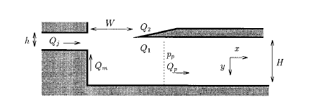
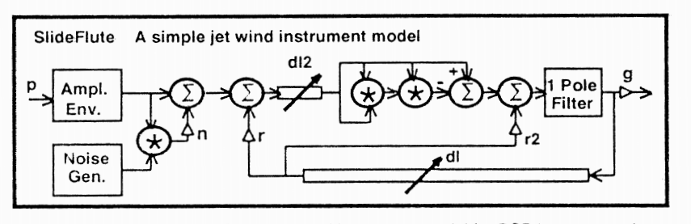

Mimicking the fipple sound in STK
 Jump to:
[ Objective ]
[ Implementation ]
[ Challenges ]
[ Future work ]
[ Resources ]
[ Bibliography ]
Jump to:
[ Objective ]
[ Implementation ]
[ Challenges ]
[ Future work ]
[ Resources ]
[ Bibliography ]
Objective
This project involved mimicking a fipple excitation source for a penny-whistle class in STK. The fipple is a type of mouthpiece found on penny-whistles (aka tin whistles), recorders, and other end-blown flutes. A fipple consists of a narrow windway called the flue that directs a thin stream of air across a blade, or labium lip. The induced pressure variation then excites resonances in a whistle body. Figure 1 shows a two-dimensional diagram of the fipple; the flue jet is on the left, the blade is the dark region on the top right. The sound is driven by air blown through the flue jet from left to right.
|  |
As discussed at length by Verge et al. in the context of recorders (1997), the physics and modeling of fipples is extremely complicated. Many factors affect the sound production in a fipple: jet oscillations, vortex shedding at the edge of the blade, and turbulence in the mouth of the instrument (Verge et al. 1997). When attempting to model the fipple, each of these factors must be carefully instantiated and fine-tuned in order to actually create realistic sound --- or any sound at all! For this reason, this project does not attempt to tackle all the variables that affect these factors independently. Instead, slight variations were made to the excitation method of the STK Flute class and it was attached to a multi-hole penny-whistle resonator (created for MUMT 618!). Since the end goal of this project was a realistic fipple sound for realtime playing, noise and jet variables were then selected to mimic slow and fast articulation in both low and high registers.
In addition to modifications made directly to the penny-whistle class (stk::Feadog), this implementation can be tried with both SKINI scores and realtime MIDI input. An accompanying MaxMSP patch allows realtime MIDI variables to be modified and tweaked.
Try it for yourself: [ Code and usage ]Implementation
Basics
The physics behind the fipple are complicated, due to the chaotic nature of the turbulence that occurs. Verge et al. (1997) derive an equation for the fipple coupled to a resonator with a single variable, where the pressure at any point in the system can be calculated relative to the incoming jet velocity Uj, and such that "during steady-state operation, the pressure source Δp is the main driving mechanism, while during the early stages of the attack transient the sound production is dominated by the effects of the jet velocity fluctuations." This dynamic pressure source,
- Δpjd : In general for steady-state operation, acoustic oscillations in the resonator (whistle body) are driven by the non-linear induced pressure difference across the mouth of the instrument (the region labeled W in Figure 1). This is called the sigmoid function, where for volume flow towards the blade f, gain k, and deviation of the air jet from directly hitting the blade h
F(f) = h + k tanh(f) (McIntyre et al. 1983). For this project, the sigmoid approximated with the polynomial x3 - x, using the stk::JetTable class. - Δpa and Δptr : These terms have to do with vortex shedding as the air jet hits the blade edge, and depend on the jet velocity, the distance from the flue exit to the blade edge, the angle of the blade edge (and therefore what angle the air jet hits the blade), and pressure due to the incoming pressure wave that has been reflected back through the body of the whistle. They are incorporated into the jet delay ratio, which is discussed below, but are not directly implemented in this model, for simplification's sake.
- Δpt : This is the turbulence term, and is modeled with a noise envelope that is large for the attack of a note and much lower during steady state.
Block diagram
In general, this fipple model is based on the excitation input to Perry Cook's slide flute model (1992). Figure 2 shows the block diagram of his model, which has been implemented in stk::Flute
|  |
In this fipple model, the delay line "dl2" represents the flue channel width (W in Figure 1), which is equivalent to the jet length, or distance air travels from the lips to the blade, in a transverse flute (Fletcher 1991). It is included in the model to account for the "phase shift along the air jet caused by the finite wave propagation speed" (Karjalainen et al. 1991). Empirical measures have shown the phase delay to be ~.25 the phase of means that the delay line length must be
While by definition the jet delay is fixed in a fipple mouthpiece -- it is impossible to change the distance from the flue exit to the blade, since the whole fipple is a solid piece of plastic, wood, or metal! -- the effects of increased jet length on the sound excitation are inversely proportional to the effects of increased jet velocity. Since jet velocity *is* variable in a fipple, the delay line is a useful modeling tool to represent the jet velocity. Longer jet lengths can be balanced by greater blowing pressure (jet velocity!), so the faster the jet velocity, the shorter the delay line needs to be, and the higher the output resonance.
The jet delay is necessarily proportional to the delay in the resonator: even though the multi-tone hole penny-whistle model has a constant total delay line length, each note has its own ideal delay line length, which corresponds to the frequency of the sounding note, which of course has to do with the sum of the delay lines between the excitation source and the "open" holes. Rossing (1991) gives the average relation between the jet delay in meters l and the resonant frequency f in Hertz as
Functions and variables
Several additional functions have been built into the stk::Feadog class to allow manipulation of fipple variables:
- setJetReflection( coefficient ): Sets the "r" gain in the above diagram, therefore determining how much reflection from the resonator gets fed back into the excitation mechanism.
- setJustFingers( boolean ): Determines whether the jet delay ratio is set automatically, based on each fingered note, or manually.
- setJetDelay( ratio ): Manually sets the ratio of jet delay to delay associated with the desired (and currently fingered) note.
- setArticulation( articulationKey ): This allows switching between several pre-defined articulation types, and sets the amplitude envelope and noise gain.
Challenges
There were two main challenges in this project. The first was figuring out what variables to focus on and what range of adjustments to allow the user. After starting out with too many variables, which quickly made tuning unwieldy and hard to predict, it was cut back to contain just the variables used for mouthpiece control in the stk::Flute class.
The second challenge was finding combinations of the variables (noise, amplitude, and jet delay) that would give good, realistic sound, as even these few variables are tricky to manipulate dynamically. While it is possible to create more "realistic" whistle sounds than those created by the basic reed table excitation model (as in the BlowHole class) for specific steady states, this success goes out the window when the fipple model is combined with multiple tone holes and used to play multiple notes in a row. The transient behavior is not well behaved or controlled by this model, due both to the adverse filtering affects of the tone hole scattering junctions and the difficulty of selecting global delay line length ratios.
Examples are provided with the code so that these behaviors can be played with both through a MaxMSP patch that allows interaction with the individual variables and demonstration SKINI files. To try it , see the code and usage page.
[ Top ]Future work
The next step is hooking up air controller and mapping the musician breath input directly to the variables in this STK class. Unlike Boehm flutes, for which both air jet velocity and air jet direction must be taken into account (da Silva et al. 2005), only jet velocity need be measured for the fipple input, as air jet direction is based on the physical structure of the mouthpiece itself and so hard-coded into each model.
Additional work could focus on adding variables to better map between the physical constants in a whistle build (slit width, distance between flue opening and blade, etc.) and the response of the model. Other work is currently being done to study the actual response of edgetone excitation methods; results from these studies could be incorporated into more realistic response of this model.
[ Top ]Resources
- Synthesis ToolKit in C++ (STK): [ home ]
- A comprehensive discussion of penny-whistle/fipple articulation and breath control: Larsen, G. 2003. The Essential Guide to Irish Flute and Tin Whistle. Mel Bay Publications, Inc.
Bibliography
- Cook, P. 1992. A meta-wind-instrument physical model, and a meta-controller for real time performance control. In Proceedings of the ICMC. [ PDF ]
- Fletcher, N. and T. Rossing. 1991. The Physics of Musical Instruments. Springer Verlag. 531-46.
- Karjalain, M., U. Laine, T. Laakso, and V. Välimäki. 1991. Transmission-line modeling and real-time synthesis of string and woodwind instruments. In Proceedings of the ICMC. [ PDF ]
- McIntyre, M., R. Schumacher, and J. Woodhouse. 1983. On the oscillations of musical instruments. Journal of the Acoustical Society of America. 1325-45.
- da Silva, A.R., M. Wanderley, and G. Scavone. 2005. On the use of flute air jet as a musical control variable. In Proceedings of the 2005 International Conference on New Interfaces for Musical Expression. 105-8.
- Välimäki, V., R. Hänninen, and M. Karjalainen. 1996. An Improved digital waveguide model of a flute - Implementation issues. In Proceedings of ICMC. [ PDF ]
- Verge, M. P., A. Hirschberg, and R. Caussé. 1997. Sound production in recorderlike instruments. II. A simulation model. Journal of the Acoustical Society of America: 2925-39.
Jump to: [ Objective ] [ Implementation ] [ Challenges ] [ Future work ] [ Resources ] [ Bibliography ]